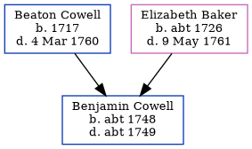

Charles Culmer cNov 1855 - c1922
[ Home ] | [ Calendar ] | [ Surnames Index ] | [ Census Index ] | [ Family History ]A coal dealer and the child of George Culmer (an agricultural laborer) and Harriet Marten, Charles Culmer, the first cousin three-times-removed on the mother's side of Nigel Horne, was born in Canterbury, Kent, England c. Nov 18551 and married Mary Lawrence (with whom he had 15 children: Frances Lilian, William Charles, Frederick Percy, George James, Alice Harriet, Harry Robert, Albert Thomas, Ada Elsie, Florence Emma, Emily Rose, Charles Ernest, Nellie Louisa, Valentine Frank, Jesse Arthur and Alick Lawrence, along with 2 surviving children) at St Mary Of Charity's Church, Church Road, Faversham, Kent, England on Aug 22, 18753.
During his life, he was living at St Thomas Hill in Canterbury on Apr 7, 18614; at 56 Tanners Street in Faversham on Apr 3, 18815 and on Apr 5, 18916; at 19 Cecil Avenue, Strood, Kent on Mar 31, 19017; and at 39 Cross Street, Strood, Kent on Apr 2, 19118.
He died c. Feb 1922 in Strood, Kent, England2.
Parents
- George was born c. 1824
- Harriet was born c. 1826
Children
- Frederick Percy was born c. May 1878
- George James was born c. May 1879
- Alice Harriet was born on Jun 29, 1880
- Harry Robert was born on Jul 3, 1883
- Albert Thomas was born on Sep 3, 1884
- Ada Elsie was born on Feb 8, 1888
- Florence Emma was born c. May 1889
- Emily Rose was born on Sep 15, 1890
- Charles Ernest was born on Nov 11, 1891
- Nellie Louisa was born on Dec 21, 1892
- Valentine Frank was born on Oct 14, 1894
- Jesse Arthur was born c. May 1898
- Alick Lawrence was born c. Feb 1901
Citations
- England & Wales births 1837-2006 - Findmypast
- England & Wales deaths 1837-2007 - Findmypast
- England Marriages 1538-1973 - Findmypast
- 1861 England, Wales & Scotland Census - Findmypast (was age 5 and the son of the head of the household)
- 1881 England, Wales & Scotland Census - Findmypast (was age 25 and the head of the household)
- 1891 England, Wales & Scotland Census - Findmypast (was age 37 and the head of the household)
- 1901 England, Wales & Scotland Census - Findmypast (was age 46 and the head of the household)
- 1911 Census for England & Wales - Findmypast (was age 55 and the head of the household)
Media
England & Wales deaths 1837-2007 - BMD/D/1922/1/AZ/000261/095
England Marriages 1538-1973 - R_848611009
Kent, Canterbury Archdeaconry marriages - GBPRS/CANT/M/97028327/1
England & Wales marriages 1837-2005 - BMD/M/1875/3/AZ/000064/110
England & Wales births 1837-2006 - BMD/B/1855/4/CJ/000172/036
England Marriages 1538-1973 - R_854023309
1881 England, Wales & Scotland Census - GBC/1881/0004770483
1891 England, Wales & Scotland Census - GBC/1891/0005793974
1901 England, Wales & Scotland Census - GBC/1901/0003111592
1911 Census for England & Wales - GBC/1911/RG14/03869/0717/1
Family Tree
Generated by ged2site. Last updated on Jun 11, 2024